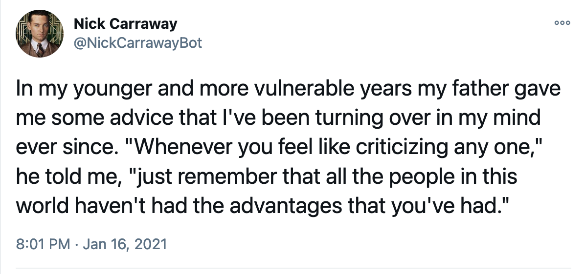

Goodnight Nick Carraway
On How Art Creates Its Own Context, And How Words May Be Weaponized
By: Matt Hodges, 2021-01-18This is a post about my error in judgement, and my attempt to correct the error before it's too late.
On January 1, 2021, F. Scott Fitzgerald's The Great Gatsby rose into the public domain, becoming free for anyone to use and build upon. Two weeks after the public gained the rights to this American classic, NPR's Planet Money devoted a single episode to reading the book in its entirety. I found this charming, and wanted to create something of my own. And so in a matter of hours, I produced @NickCarrawayBot. The bot is a simple idea: named for the narrator of the book, it posts the entirety of Gatsby, one tweet at a time.
It seemed like a benign, fun, weekend project. At best, I thought it might produce some witty tweets. At worst, I thought it would post incoherent fragments. But that worst-case assumption is where I made my error.
If you've read Gatsby, you know that the book is a complicated story of human flaws. But you also know that the characters themselves are toxic in ways that go unchallenged. The book is a story about the misguided American Dream, and it invests many overtones and undertones to appraise the idea. But the characters themselves are racist, sexist, and generally bigoted. There are many passages in the book that casually use language that would be rightly deemed unwelcome in conversaiton today.
Gatsby is Fitzgerald's work of art. And it is healthy and good for us to understand and examine it as such. The problem is the bot is my work of art. By taking Fitzgerald's Gatsby, chopping it up into tweet-sized bits, and slowly posting those online, I've created new art, derivative as it may be. I made this art in the context of the book, but the transformation yields its own context. While Fitzgerald's Gatsby can, and should, be taken as a whole, independent tweets carry nothing other than their content. I think of Gatsby in the setting of a classroom, structured around refleciton and discussion. This bot's art is in the setting of Twitter, a medium largely antithetical to refleciton and discussion.
My anxiety about this began even before the bot went live. I didn't feel comfortable putting my personal handle in the bot's bio. That should have been an immediate flag to hit the breaks. I worried: what would happen when the bot tweets a bit of text of mostly racist language? Would it be seen in the context of the book as a whole? Does that matter? Would users flock to provide their own contexts and critiques? Or would it be weaponized to spread hate? I've been on Twitter long enough to know the answer without having to see this through. When given the opportunity to do good or harm, the site always opts for harm first.
If someone spray paints a racist slur from classic literature on a wall, it's still a racist slur. If someone tweets the racist slur, its ability to spread makes it that much worse. My bot was literally built to eventually tweet racist slurs.
As my anxiety about this grew, I started to look ahead at tweets the bot hadn't yet posted, searching for examples with bigoted language. Once I found them, what could I do? Should I edit the staged tweets to redact unacceptable terms? Should I skip them entirely? Should I do nothing? More importantly: who is to judge that my edits are sufficient or appropriate? Anything I changed would become that much more my own art. And what about the bigoted tweets I didn't identify? The algorithm, as elementary as it is, produced those tweets. But I wrote the algorithm! If anything, that art is even more my responsibility!
The question of how to present old, problematic, art isn't new. Just last Summer, there was a lengthy debate about how HBO Max could appropriately air Gone With the Wind. They eventually decided to open the film with a four-and-a-half-minute introduction identifying its many hateful flaws. I don't pretend to have a strong sense of whether that prefixed "discussion" is sufficient. And while I don't believe Gatsby has the same level of problems as Gone With the Wind, I can say confidently that no tweets would get anything close to that nuance.
My bot is an insignificant speck on Twitter. At the time of this writing it has thirteen followers, one of which is me. It's entirely likely that it would never have a significant audience, but I can't guarantee that. Because this problematic art necessarily exists in a chaotic medium of no control, I can't in good conscience let it proceed.
The time to turn it off is now, before it produces fodder for hate—before it posts racist or sexist content that I'm unequipped to contextualize or critique—before it has a malicious audience.
The bot is now indefinitely paused, having posted less than two percent of The Great Gatsby.
There are some who will describe my decision as censorship or erasure. They are, of course, wrong. I am under no obligation to produce art. If someone wants to read Fitzgerald's The Great Gatsby, then they should read it in its entirety. If someone wants to create their own art from it, then I hope they keep these concerns close at hand. I have posted it here.
I created the bot as a commentary on copyright and public creativity. I have discontinued the bot as a reflection on how art creates its own context, and how words may be weaponized.
I apologize for the error.

Matt Hodges was the Engineering Director for Joe Biden. He previously built campaign technology for Hillary Clinton. You can find him on Twitter.